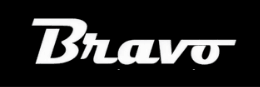

Veículo Utilitário em Campinas e São Paulo: Mais Capacidade Sem Perder Agilidade
Solicite atualizações pelo WhatsApp durante a operação. Combine na contratação a confirmação de recebimento e as condições de acompanhamento.
Qual veículo usar
Documento e volume pequeno
Envelope, chave, encomenda que cabe no bagageiro. Mais rápido no trânsito urbano.
Lote ou volume médio
Várias encomendas de uma vez, caixas, cargas protegidas da chuva. Esta página.
Volume grande
Carga fracionada, transferência de estoque entre unidades.
Guia completo com todos os critérios: motoboy, utilitário ou caminhão — qual escolher.
Quando usar o veículo utilitário
- Lote de encomendas ou materiais da empresa numa coleta só
- Caixas e volumes que não cabem no bagageiro de uma moto
- Coletas programadas recorrentes para empresas
- Cargas que precisam ficar protegidas da chuva ou de manuseio mais delicado
- Mudança pequena ou transferência de mercadorias entre unidades
O mesmo padrão de atendimento, só que com mais espaço de carga
Informe material, endereços e horário desejado. Coleta e entrega dependem da disponibilidade; valor e previsão são confirmados antes de contratar.
Moto, utilitário, van e caminhão dependem da disponibilidade para a rota e o horário solicitados. Informe o material e confirme o veículo, o valor e a previsão antes de contratar.
Fora de Campinas, o utilitário segue o mesmo padrão em Indaiatuba, Hortolândia, Paulínia, Rio Claro e Jundiaí.
"Passando para agradecer pela entrega. Recebi tudo em perfeitas condições. Obrigada pela atenção, cuidado e comprometimento. Sucesso para toda a equipe!"— Patrícia, cliente Brulezzi Transportes



Perguntas frequentes
Que tipo de carga cabe no veículo utilitário?
Caixas, lotes de encomendas corporativas, materiais que não cabem numa moto e cargas que precisam ficar protegidas da chuva.
Atende empresas de qualquer porte?
Sim. Atendemos empresas de qualquer porte, desde uma coleta pontual até rotas programadas recorrentes.
Tem o mesmo acompanhamento do motoboy?
Solicite atualizações pelo WhatsApp durante a operação. Combine na contratação a confirmação de recebimento e as condições de acompanhamento.
Precisa transportar um volume maior?
Solicitar utilitário no WhatsAppO que confirmar antes da coleta
Uma cotação clara começa com o material e a rota. Você recebe valor e previsão antes de decidir.
- Tipo de material, quantidade, peso e dimensões para confirmar o veículo.
- Endereços, horário necessário e regras de acesso dos locais.
- Condições de pagamento e emissão fiscal na contratação.
- Acompanhamento pelo atendimento até a confirmação de recebimento.